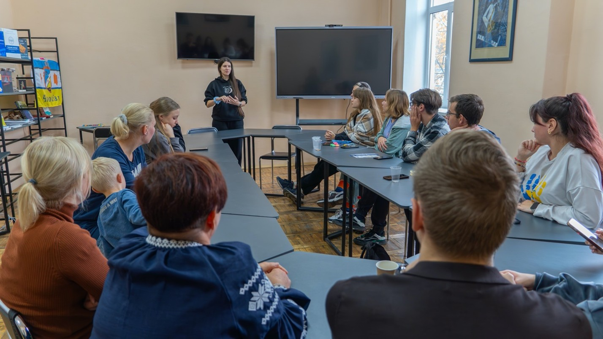

Center for Psychological Resilience and Wellbeing at KSPU
The Center for Psychological Resilience and Wellbeing at Kherson State University was established within the BURN project to strengthen mental-health support for students and university staff. While sharing the common mission of enhancing psychological wellbeing across Ukrainian universities, our Center focuses on creating accessible, student-oriented spaces for learning, reflection, and personal growth. We combine evidence-based psychological approaches with a community-building perspective, ensuring that support is both professional and responsive to the needs of our academic community.

A distinctive feature of our Center is a strong emphasis on training formats. We conduct short thematic workshops (1–3 hours), full-day trainings, and practice-oriented learning modules that develop emotional intelligence, communication skills, stress management, and self-regulation. We also coordinate a Student Psychological Club – a peer-learning and practice space where students explore wellbeing topics, engage in reflective exercises, and build supportive networks. Additionally, our team facilitates intensive in-person learning weeks, offering deeper immersion into topics such as resilience, self-care, and trauma-informed communication.

The Center operates in Ivano-Frankivsk, where the university is temporarily located due to the ongoing situation in southern Ukraine. We collaborate closely with academic departments, youth initiatives, and international partners to ensure that our activities remain relevant, practical, and inclusive. Our goal is to empower students, early-career specialists, and staff with tools for wellbeing and resilience, and to contribute to the broader system of psychological support being developed across Ukrainian higher education.
